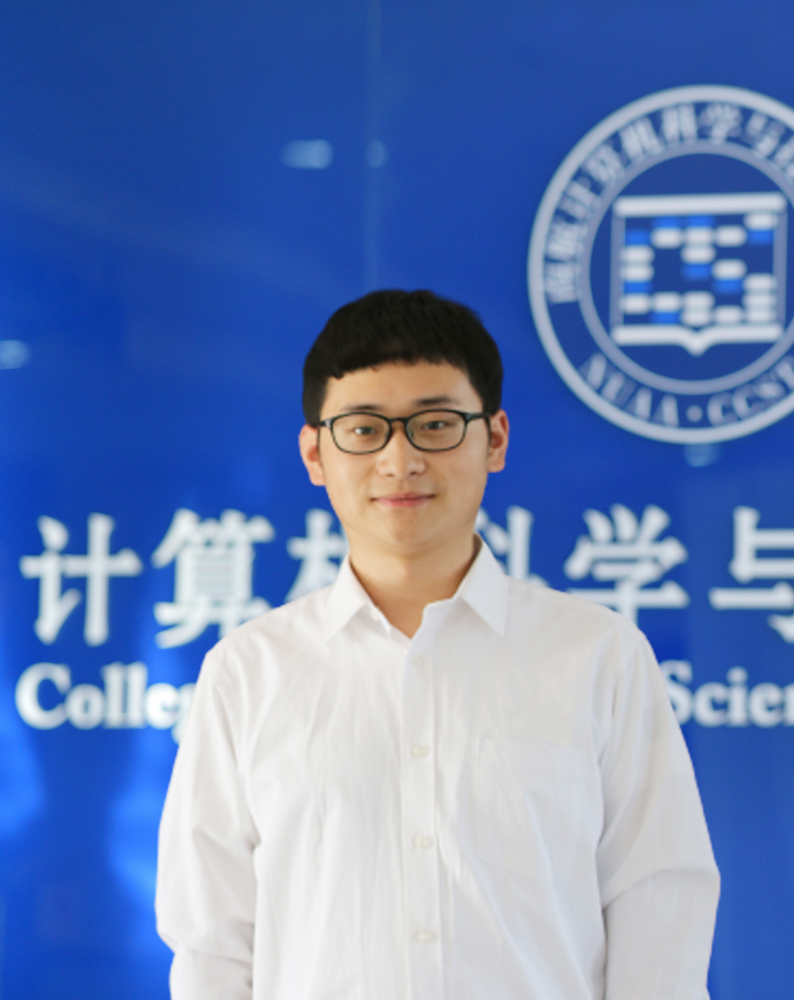

Junyong Zhao赵俊勇Phd
School of Artificial Intelligence, |
 |


I am currently a Ph.D. in the Department of Computer Science and Technology, Nanjing University of Aeronautics And Astronautics, advised by Prof. Daoqiang Zhang and Liang Sun. Before joining NUAA, I received my B.S. degree from School of Physics and Electronic Sciences of Shandong Normal University in 2017. I was a visiting Ph.D. student at the Agency for Science, Technology and Research (A*STAR) in Singapore from December 2023 to December 2024, advised by Prof. Huazhu Fu
My research interests include Deep Learning, Medical Image Analysis, Self-supervised Learning, Semi-supervised Learning, and Finite Element Analysis.
**I'm seeking Postdoc/Research fellow position in 2025.**
News
[Jun 2024] Two paper accepted by MICCAI 2024
Selected Publications
Journal Papers
-
Comprehensive Learning and Adaptive Teaching: Distilling Multi-Modal Knowledge for Pathological Glioma Grading [paper] [code]
Xiaohan Xing, Meilu Zhu, Zhen Chen, and Yixuan Yuan.
Medical Image Analysis, 2023.
Conference Papers
-
Accelerated Multi-Contrast MRI Reconstruction via Frequency and Spatial Mutual Learning
Qi Chen, Xiaohan Xing^, Zhen Chen, Zhiwei Xiong.
International Conference on Medical Image Computing and Computer Assisted Interventions (MICCAI 2024), MOROCCO. (^Corresponding Author)
Professional Activities
-
Conference Service
Area Chair, International Conference on Medical Image Computing and Computer Assisted Intervention (MICCAI), 2024.
Session Chair, IEEE International Conference on Robotics and Automation (ICRA), 2021.
Session Chair, IEEE International Conference on Information and Automation (ICIA), 2018.
-
Journal Reviews
IEEE Transactions on Medical Imaging.
-
Technical Reviewers
MICCAI, 2021 & 2022 & 2023.